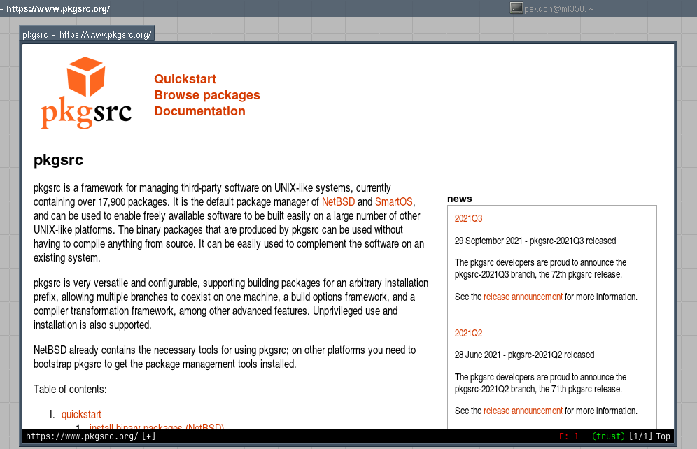

Solaris Desktop
After I was given a Sun Blade 1500, I started working on getting it setup trying to see if I could use it as a development machine.
To get software I want compiled I started pkgsrc as there aren’t many alternatives other than Ravenports and building everything by hand.
I also got myself (a now dead) Sun Ultra 40 reducing wait times while trying to get software compiled, even though it was x86_64 most compatability issues are unrelated to the architecture.
pkgsrc is familiar to me since the days when I used NetBSD on my workstation, it also has been supported on Solaris for a long time and now has a good set of patches and tweaks to make software run on Solaris.
It has taken a while but now I have a mostly functional desktop including:
- Compiler, GCC 8.4 (GCC 9 deprecated Solaris 10, GCC 10 dropped it)
- Editor, neovim instead of Emacs as Emacs is super slow on legacy hardware these days.
- Music Player, C* Music Player
- Shell, ZSH
- Web Browser, luakit instead of Firefox as it requires rust.

There are still a few things on my wish list:
- Up to date Go (Only Solaris 11 is supported), GCC GO works.
- Media Player
There’s been a few patches submitted to pkgsrc and also upstream projects such as cups, irssi, libuv, neovim, xorg, zsh, along the way. Most patches have been very small such as missing includes, dropped defines or more compatible options to tools like install or how the shell is used.
The only changes with actual content has been for neovim where Solaris < 11 and Illumos lack a forkpty implementation.
And for the software where pkgsrc libnbcompat does not currently provide enough functionality, I have rolled my own libsol10-compat library with implementations for now commonly used functions such as getrandom, strndup and posix_memalign. The library make use of the GCC extension #include_next, CPPFLAGS and LDFLAGS to make it appear as if the host system have these new standard functions available.